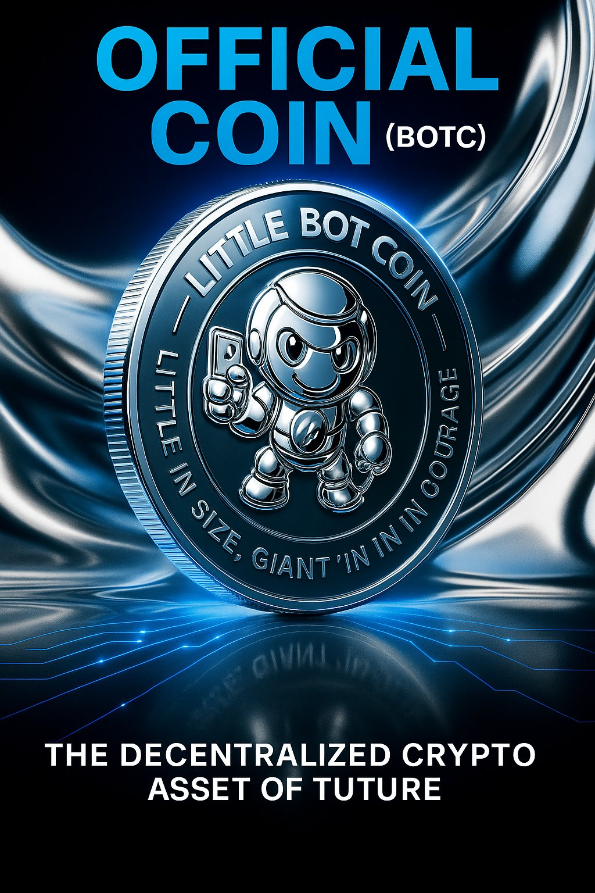
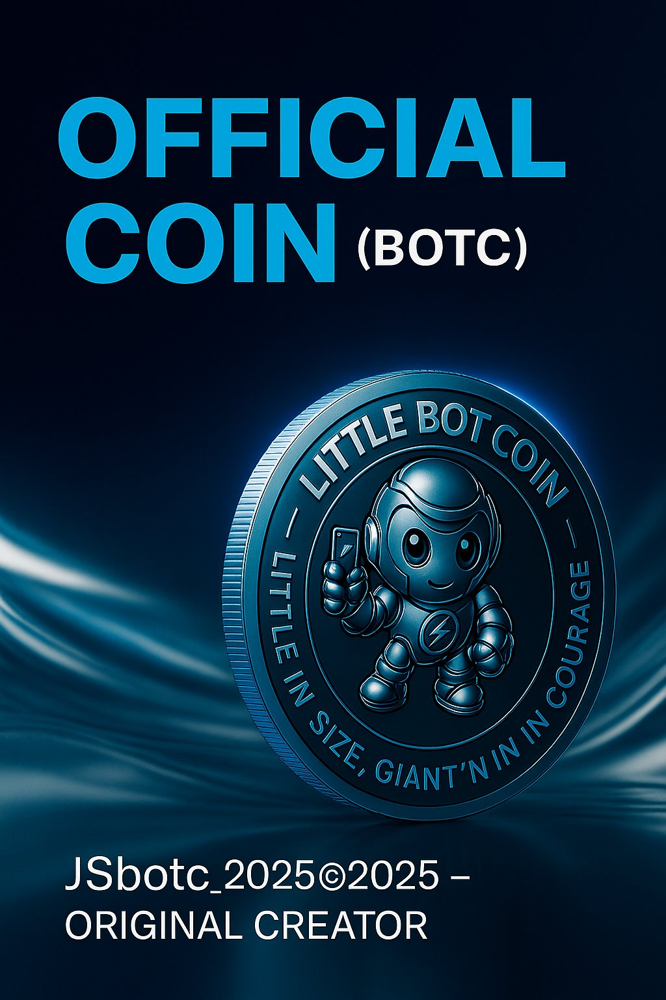
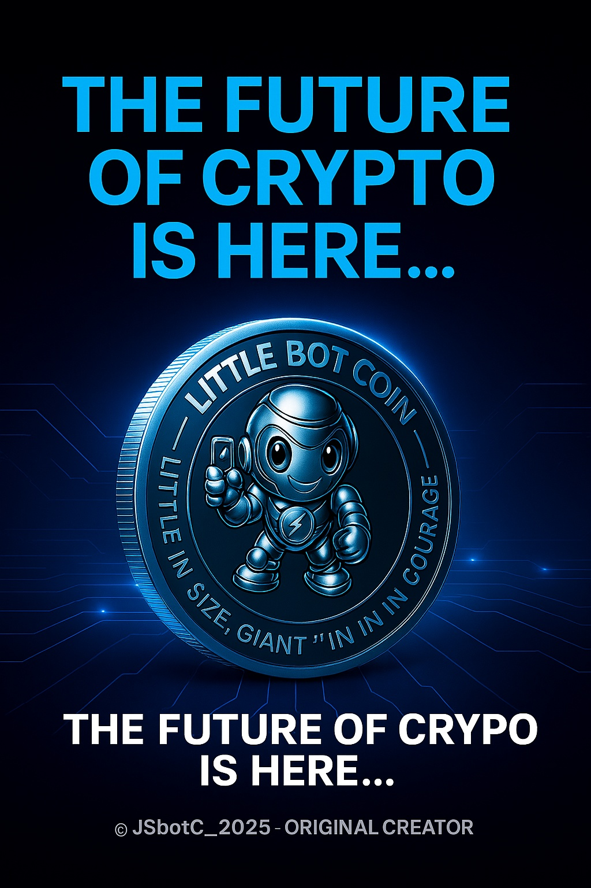

ARTIGO I: Ao interagir com o contrato BOTC, o utilizador assume total responsabilidade pela sua decisão financeira. O BOTC não assume quaisquer perdas financeiras.
ARTIGO II: O projeto segue as diretrizes internacionais de ativos digitais e transparência Web3.
ARTIGO III: Repudiamos qualquer atividade ilícita (AML/CTF). Colaboramos com a integridade da rede BSC.
ARTIGO IV: O investidor declara ciência da volatilidade do mercado cripto. Os investimentos em criptoativos envolvem risco elevado de perda de capital.
ARTIGO V: A lei soberana deste acordo é o Smart Contract registado na Blockchain, acessível publicamente na BscScan.
Fundador Responsável: José Santos · JSbotC_2025©2025
BOTC é um protocolo descentralizado construído sobre a Binance Smart Chain com um compromisso inabalável: liquidez verificável, taxas fixas e contratos auditáveis.



Num ecossistema saturado de projetos opacos, o BOTC nasce com um mandato diferente: cada operação é auditável, cada taxa é previsível e cada decisão é documentada publicamente.
O nosso Smart Contract garante que as taxas de 1.5% alimentam diretamente a liquidez do ecossistema — não carteiras privadas. O BOTC não assume quaisquer perdas financeiras dos investidores.
Cada componente foi desenhado para maximizar confiança e sustentabilidade a longo prazo.
Integre a sua marca no ecossistema BOTC e aceda a uma comunidade de investidores qualificados.
Transparência começa pela identificação de quem constrói e dirige o projeto.
Criador original do protocolo BOTC (JSbotC_2025). Responsável pela estratégia, governança e direção institucional do projeto a nível internacional.
Responsável pelo desenvolvimento e auditoria dos contratos inteligentes que sustentam o ecossistema BOTC na Binance Smart Chain.
Ponto de contacto entre a equipa e a comunidade global de holders, garantindo comunicação clara, atempada e transparente.
O BOTC foi analisado por plataformas internacionais de verificação de segurança e obteve as máximas classificações.
Para parcerias institucionais, due diligence de investidores ou questões sobre o protocolo, estamos disponíveis.